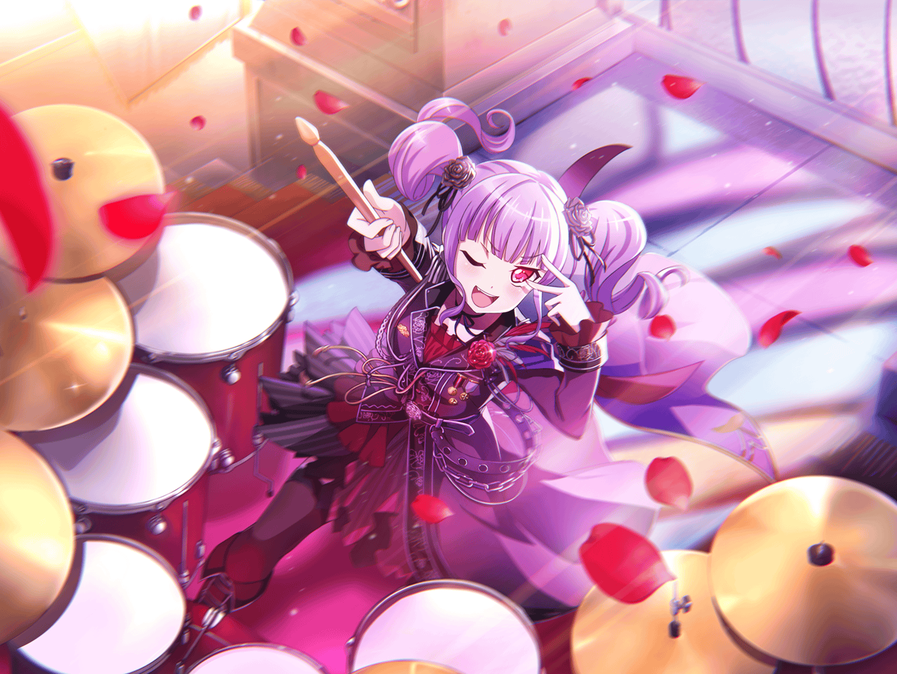

あこ
ふふーんふーん♪
あこ
え～と、あとはアレを買って終わりかな？
あこ
楽しみだな～。
また、あこ、カッコよくなっちゃう！
あこ
えへへ、どうしよう！
ニヤニヤが止まらないよ～！
あこ
あこがもっとカッコよくなったら、
みんな、きっと驚くだろうな～
あこ
あ、ということは、やっぱり新しいポーズも必要だよね。
どういうのにしよう……
あこ
こう、ババッ！
……とか？
あこ
いや……
ズバッ！ の方がカッコイイかも……
あこ
いや、でもでも……
あこ
……あれ？
今、誰かに呼ばれた……？
あこ
あ、{{userName}}さんだ！
あこ
……そうだ！
ねえねえ、{{userName}}さん！
あこ
とぉ～……！
あこ
このポーズ、どう思う？
あこ
……わからない？
ん～、あこはカッコいいと思うんだけどな～
あこ
じゃあ……シュババッ！
あこ
こっちの方がカッコいいかな？
あこ
え？
二番目の方がカッコいい？
あこ
なるほど！
{{userName}}さんは、こっちの方が好きなんだね！
あこ
よーし！
なら、こっちを使うことにする！
ありがと～！
あこ
それで、{{userName}}さんは何をしているの？
あこ
あ、今日はお休みなんだ？
それじゃあ、あこと同じだね！
あこ
……あこ？
あこは、カッコよくなるための買い出し！
あこ
うんうん！
カッコよくなることにダキョーはしないよ！
あこ
あこがRoseliaに入りたい！ って思ったのも、
友希那さんがカッコよかったからだしね！
あこ
……確かに友希那さんはカッコイイ？
あこ
でしょー！
{{userName}}さんもそう思うよね！？
あこ
友希那さんは、あこの憧れの人！
あこ
だから、最初、友希那さんに Roseliaに入ったらダメ！
って言われた時は、本当にショックだったよ～
あこ
……え、そんなことがあったなんて意外？
あこ
う～ん……確かに、今のあこ達を見てると意外かも
あこ
その時のことをもっと知りたいの？
わかった！ じゃあ、ちょっとだけお話するね！
あこ
確か……あこが初めてバンドに入れてもらおうって、
友希那さんにお願いした時……
あこ
おねーちゃんもドラムやってて……
あこ
あこ、おねーちゃんのこと大好きで憧れてるから、
『あこは世界で二番目に上手いドラマーです！』
って言って、バンドに入りたいことを伝えたの
あこ
そうしたら友希那さんは、
あこにこう言ったの
あこ
『遊びはよそでやって、
私は２番であることを自慢するような人間とは組まない』って
あこ
ホント、カッコいいよね！
あこ
その時、あこ、
絶対友希那さんと組みたいって、改めて思ったの！
あこ
こんなすごい人と一緒にバンドをしたい！ って！
あこ
だから、
それからも、ずっとアタックしたんだけど……全部ダメで……
あこ
どうにかして、入れてもらおうと一杯頑張ったんだけど……
どうしてもあこの気持ちが伝わらなくて……
あこ
だから、どうしたらいいかな？
って、りんりんに電話したんだ
あこ
そうしたらね！ りんりんが、
言葉だけじゃ伝わらないかもって言ってくれたの！
あこ
あこが、友希那さんの歌を好きになったみたいに、
友希那さんに音で伝えればいいんだよって教えてくれたの！
あこ
その時にあこ、ピーンってきてね！
あこ
りんりんのアドバイス通り実行しようと思ったの！
あこ
でも、友希那さんはやっぱり、
あこの話を聞いてくれないから、
本当にどうしようって困ってた時に……
あこ
おねーちゃんが、
友希那さんと知り合いだって教えてくれたんだ！
あこ
しかもね！ その時初めて、
リサ姉と友希那さんが親友だってことも知ったんだ！
あこ
それで、リサ姉に橋渡ししてもらって、
どうにか、あこの演奏を聞いてもらえることになったんだよ！
あこ
そういえば、あの時初めて、
リサ姉がベースを弾けるってことも知ったなぁ
あこ
……って、まあ、それは置いておいて！
あこ
つまりね、何が言いたいかっていうと、
あこがバンドに入れたのは、おねーちゃんのおかげなんだ！
あこ
だって、おねーちゃんが、
友希那さんのことを、リサ姉とのことを教えてくれなかったら
何も始まらなかったんだもん！
あこ
さすがおねーちゃんだよね！
ホント、いつも頼りになるんだ～！
あこ
あ、もちろん、
りんりんにも感謝してるよ？
あこ
あの時のアドバイスがなかったら、
今こうして、このバンドにはいなかっただろうしね！
あこ
あこ、今がすごく楽しい！
あこ
Roseliaのみんなと一緒にバンドができて、
毎日が、すごく楽しいんだ！
あこ
こんな毎日が、ずっと、ず～っと続けばいいのにな～……
あこ
……{{userName}}さんも一緒に祈ってくれるの？
ありがとう！
あこ
じゃあじゃあ、
そんな{{userName}}さんのお祈りを無駄にしないためにも、
あこ、もっともっと頑張るね！
あこ
だから、これからもあこ達を見守ってください！
約束だよ！！